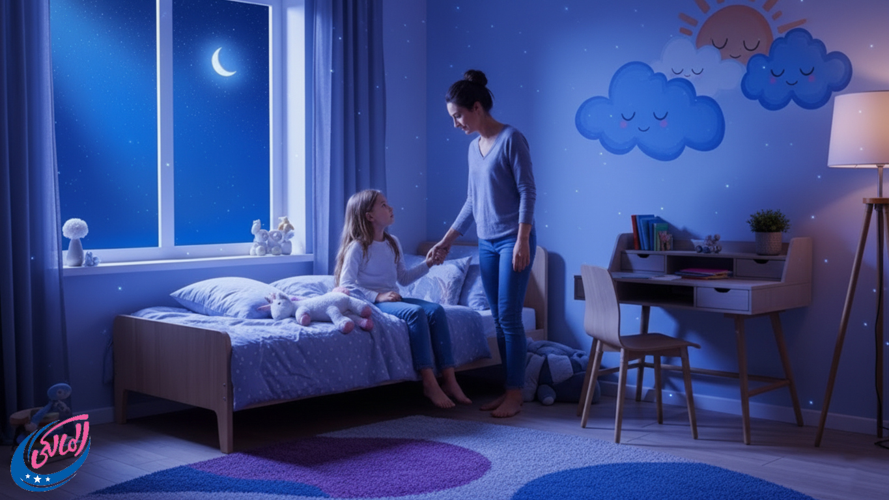
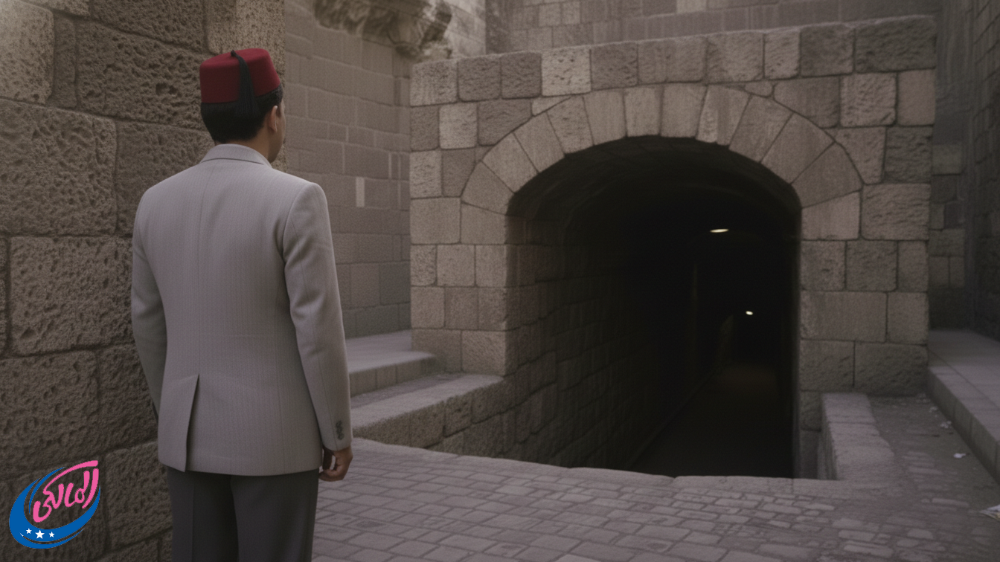
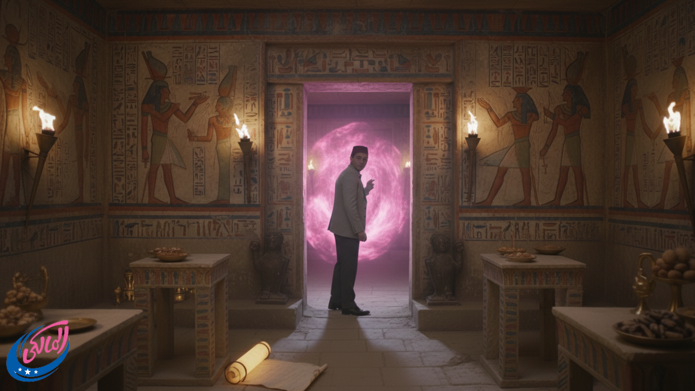
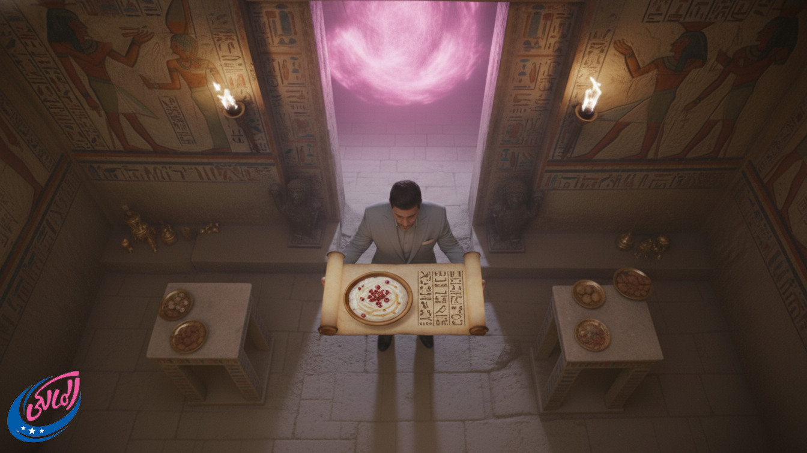
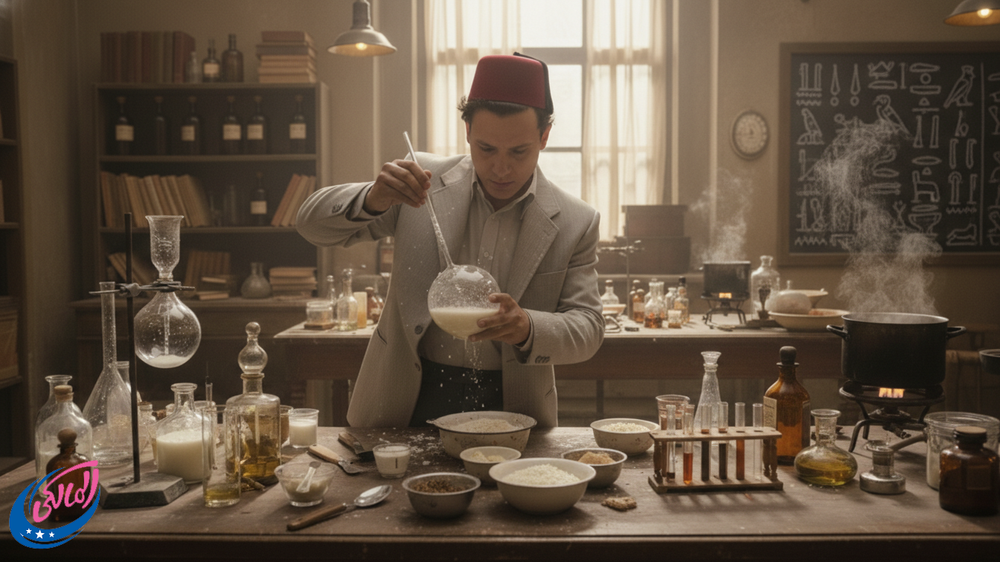
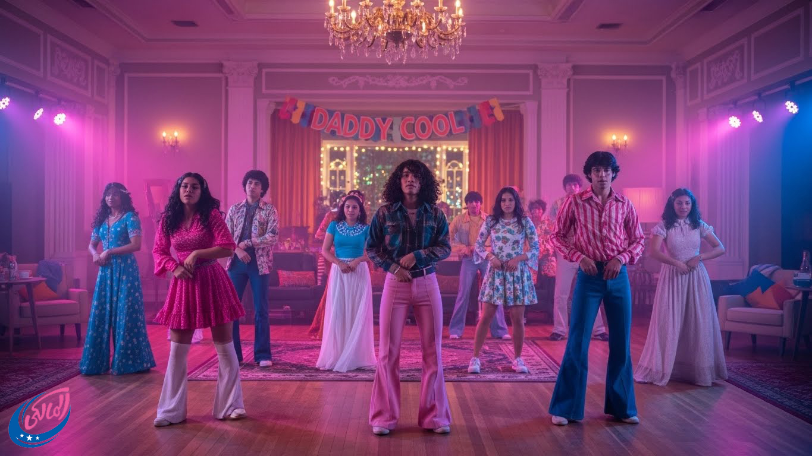
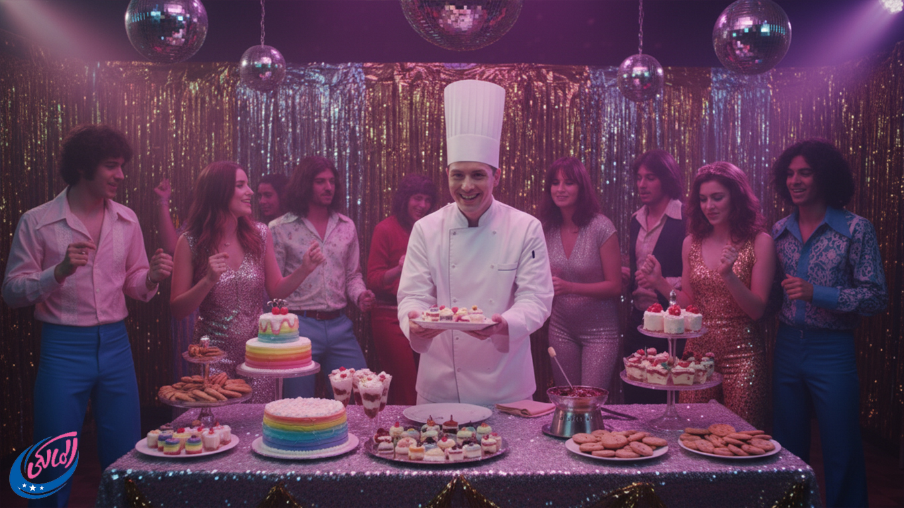
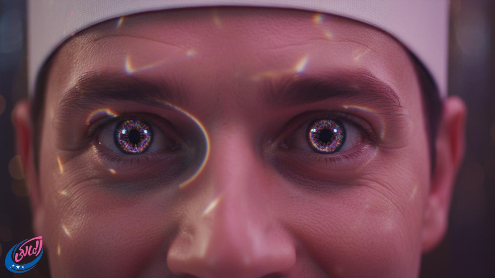
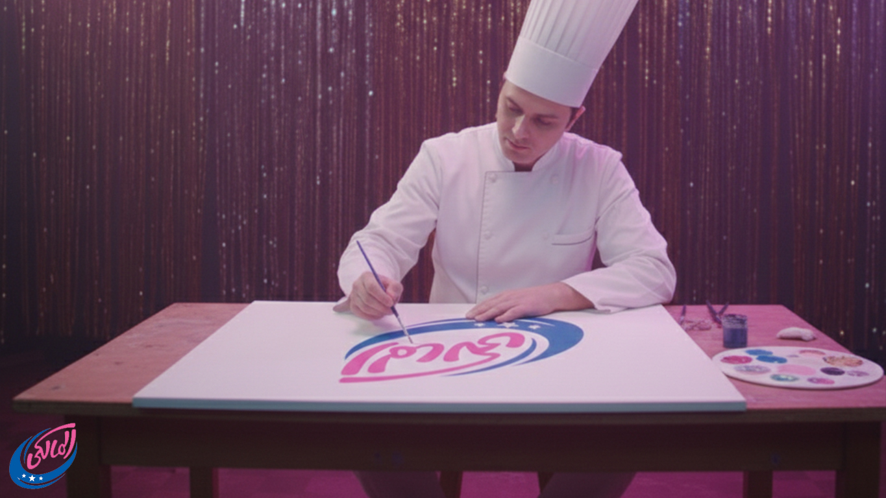

المالكي
Storyboard Generation










Project Story
The story follows a young girl who asks her mother how her father discovered the secret behind their famous rice pudding.
Her mother takes her back in time, to the days of British occupation in Egypt. Her grandfather was involved in the resistance. During a protest, while escaping, he discovered a hidden underground passage. Inside an ancient Egyptian temple, he found an old papyrus containing the secret of rice pudding.
He took the discovery to his laboratory and experimented repeatedly until he finally perfected the secret recipe. He then began sharing the special rice pudding with members of the resistance.
As the years passed, the business evolved. By the 1990s, he was serving his signature dessert at parties and celebrations, where people were always amazed by its taste.
At one of these parties, he became fascinated by the colorful lights and the vibrant atmosphere of the era. Inspired by the visual energy and aesthetic of the 1980s, he sketched the Al Malaki logo, giving the brand its distinctive identity.
The advertisement then transitions to the present day, showing the shop. A young customer approaches the cashier and orders rice pudding.
The final advertising shot is a humorous visual featuring a man wearing a white T-shirt, with facial features resembling the owner of Balb Laben, as a playful advertising ending that highlights how customers keep choosing Al Malaki.